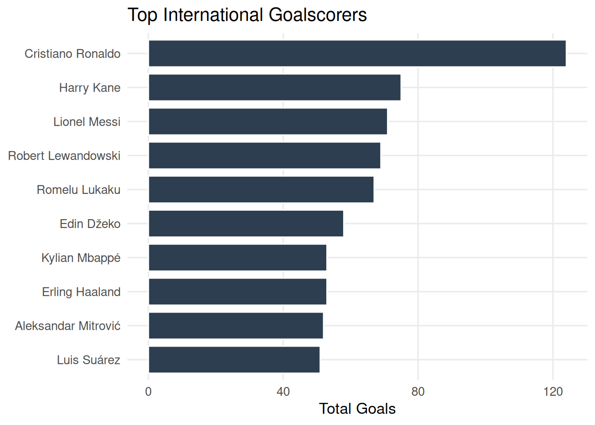
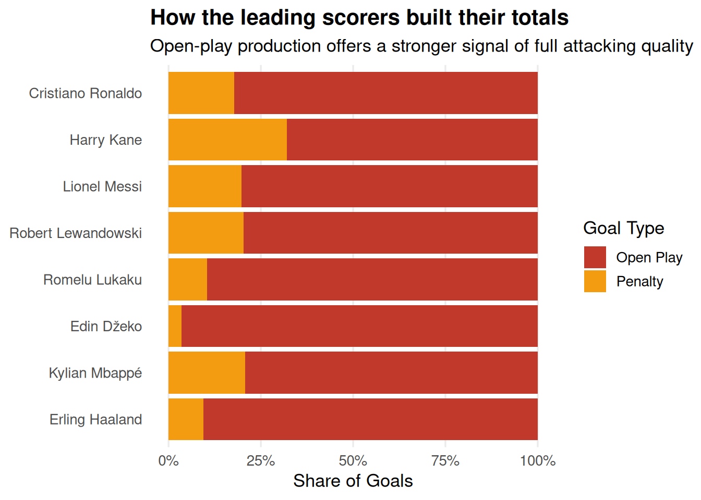
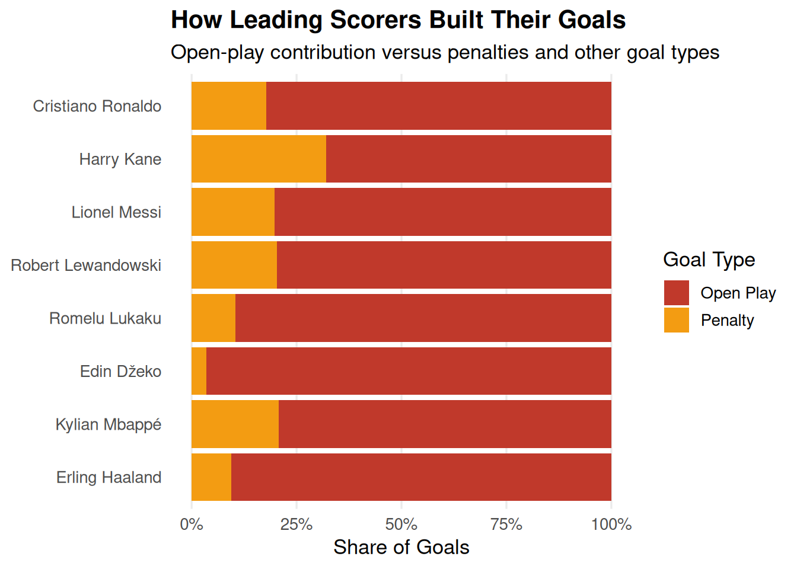
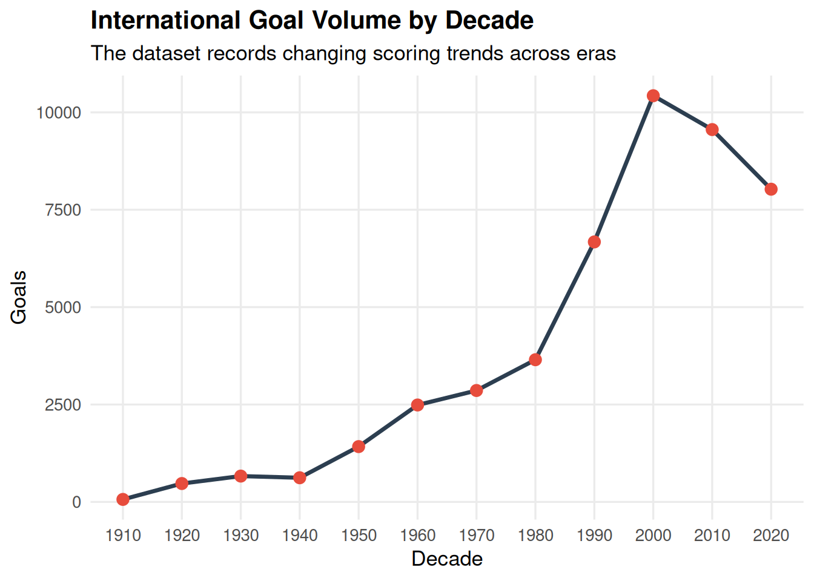
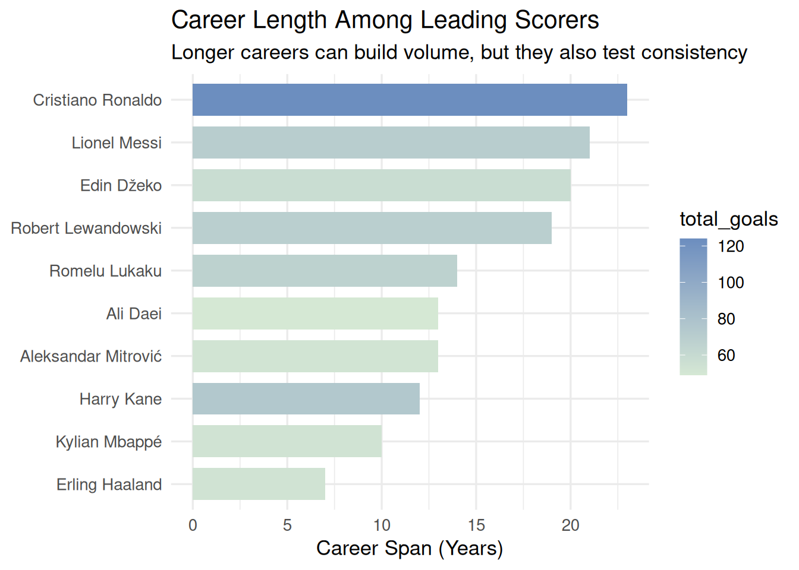
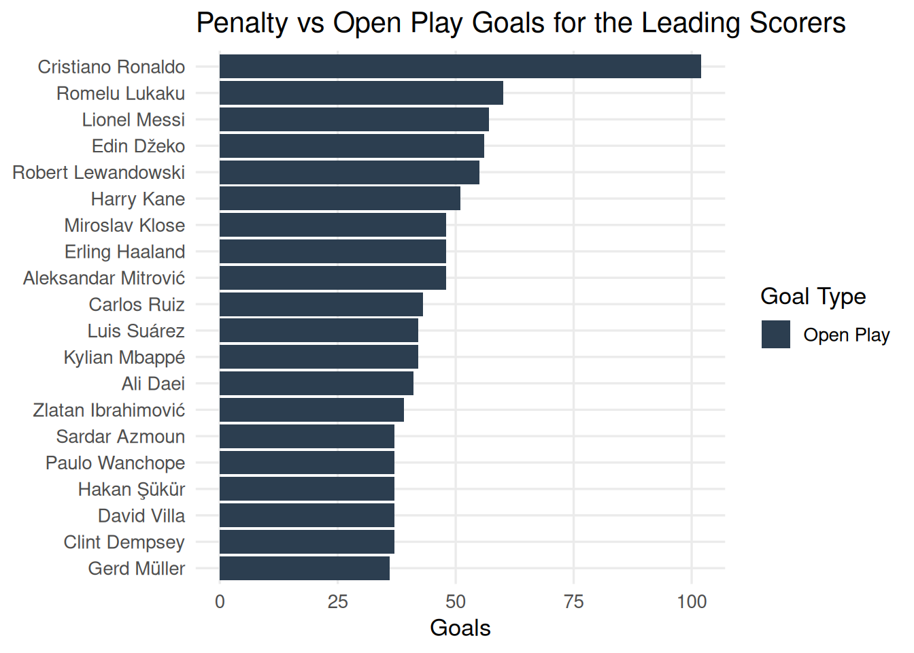

Who Is the Greatest International Striker of All Time?
An evidence-based analysis of the international scoring debate
The debate over the greatest international striker is usually framed by memory, reputation, and personal preference. That tradition is understandable, but it leaves a major gap. A serious historical claim should be tested against measurable evidence.
This project uses international goal data to build a more disciplined case. It evaluates the leading candidates on three central questions: how much they scored, how they scored, and how efficiently they sustained elite production over time.
The scoring leaderboard
The starting point is straightforward. Raw goal totals establish the shortlist of players who deserve serious consideration. The leaderboard does not answer the question by itself, but it provides the first layer of evidence.
This chart shows the players with the highest international goal totals. It is a useful first pass because it identifies who belongs in the debate, but it does not prove who was the strongest overall.
The next step is to test those totals against how the goals were produced.
| scorer | team | total_goals | active_years | open_play_share | penalty_share |
|---|---|---|---|---|---|
| Cristiano Ronaldo | Portugal | 124 | 22 | 82.3 | 17.7 |
| Harry Kane | England | 75 | 10 | 68.0 | 32.0 |
| Lionel Messi | Argentina | 71 | 20 | 80.3 | 19.7 |
| Robert Lewandowski | Poland | 69 | 16 | 79.7 | 20.3 |
| Romelu Lukaku | Belgium | 67 | 11 | 89.6 | 10.4 |
| Edin Džeko | Bosnia and Herzegovina | 58 | 20 | 96.6 | 3.4 |
| Erling Haaland | Norway | 53 | 7 | 90.6 | 9.4 |
| Kylian Mbappé | France | 53 | 10 | 79.2 | 20.8 |
Goal production reveals the profile
A striker’s value is not defined only by how many goals are scored. It is also shaped by how those goals are created. Open-play goals are often the strongest signal of complete attacking quality because they require movement, timing, and a higher level of game involvement than penalties alone.

This chart breaks each leader’s goals into open play, penalties, and other types. It shows whether a player’s total came mostly from active attacking play or from spot kicks, which changes how we interpret the raw scores.
Efficiency separates volume from sustained excellence
The next layer is efficiency. A player who produced goals at a high rate over fewer active years can be just as compelling as a career-long scorer who accumulated totals over a longer span. In that sense, goals per active year helps measure how efficiently a striker turned opportunity into output.

This chart measures goals per active year, which highlights players who scored efficiently rather than just accumulating totals over a long career. It helps separate consistent, high-rate scorers from those who built their numbers slowly.
Career profile comparison
The strongest candidates usually separate themselves not only by raw volume, but by the blend of output and efficiency. The next chart compares total goals against goals per active year, with open-play share shaping the size of each point.

This scatter plot combines volume, efficiency, open-play share, and career span to show the most balanced profiles. It makes it easy to spot which players were strong across multiple dimensions.
The next chart then adds historical context by showing how international scoring changed over time.

This chart provides historical context by showing how international scoring totals changed by decade. It helps explain whether a player’s numbers came from a more goal-rich era or a tougher scoring environment.
The composite model brings the evidence together
The final step is to combine the signals into a single framework. The model used here weights three elements: total goals, open-play share, and efficiency. It does not pretend to capture every nuance of the sport, but it provides a structured way to compare candidates on the same terms.

This final ranking combines volume, open-play quality, and efficiency into one ordered list. It makes the evaluation more transparent by showing how those three factors are weighted together.

This chart isolates the quality signal behind the volume totals. A high open-play share suggests that the player’s goal output came from active attacking play rather than from penalties, which matters when comparing players with similar raw totals. It gives readers a direct way to assess how “complete” each scorer’s profile looks.
| scorer | team | total_goals | open_play_share | goals_per_year | model_score_pct |
|---|---|---|---|---|---|
| Cristiano Ronaldo | Portugal | 124 | 82.3 | 5.64 | 81.3 |
| Romelu Lukaku | Belgium | 67 | 89.6 | 6.09 | 63.8 |
| Harry Kane | England | 75 | 68.0 | 7.50 | 63.7 |
| Erling Haaland | Norway | 53 | 90.6 | 7.57 | 62.6 |
| Said Bayazid | Syria | 11 | 100.0 | 11.00 | 58.7 |
| Sándor Kocsis | Hungary | 11 | 100.0 | 11.00 | 58.7 |
| Yaqoob Juma Al-Mukhaini | Oman | 11 | 100.0 | 11.00 | 58.7 |
| Ali Daei | Iran | 49 | 83.7 | 7.00 | 57.7 |
The ranking is the clearest summary of the evidence assembled here. It does not eliminate debate, but it gives the discussion a firmer foundation. In a category defined by opinion and memory, the data provides a more rigorous way to judge who truly stands above the rest.
This is the culmination of the analysis: a model that does not simply reward the raw leader, but also gives credit to players who scored in open play and stayed productive across their international careers.
9. Final conclusion — the short answer
Who do we pick as the best international striker from this dataset, and why? Our short answer is the player with the strongest balance of volume, quality, and efficiency, not simply the player with the most goals. The takeaway is that the data supports a thoughtful verdict, and the final section highlights what the model still cannot capture.
Our pick for the best international striker in this dataset: Cristiano Ronaldo (Portugal) — model score: 8130.Why this pick?
- It combines a high raw goal total with a strong open-play share and good efficiency across active years.
- The pick is not just the raw scorer — the model rewards balanced profiles.
The charts above show how the leading candidates separate on volume, scoring style, and efficiency, which gives the debate a stronger evidentiary foundation.
Limitations and next steps
How should we interpret the result with care? The dataset is strong but not complete, because it lacks minutes played, caps, and match context. The takeaway is that the ranking is useful but still a simplified view of greatness, and the next step is to add richer data if we want a more complete answer.
References
Goalscorers dataset. (n.d.). Unpublished dataset used for this project.
R Core Team. (2024). R: A language and environment for statistical computing. R Foundation for Statistical Computing. https://www.R-project.org/
Wickham, H., et al. (2019). tidyverse: Easily install and load the tidyverse. https://CRAN.R-project.org/package=tidyverse
Wickham, H. (2016). ggplot2: Elegant graphics for data analysis. Springer-Verlag New York. https://ggplot2.tidyverse.org/
Allaire, J. J., et al. (2024). Quarto. https://quarto.org/
Wickham, H., et al. (2023). dplyr: A grammar of data manipulation. https://CRAN.R-project.org/package=dplyr
Wickham, H., et al. (2023). readr: Read rectangular text data. https://CRAN.R-project.org/package=readr
Wickham, H. (2023). forcats: Tools for working with categorical variables. https://CRAN.R-project.org/package=forcats